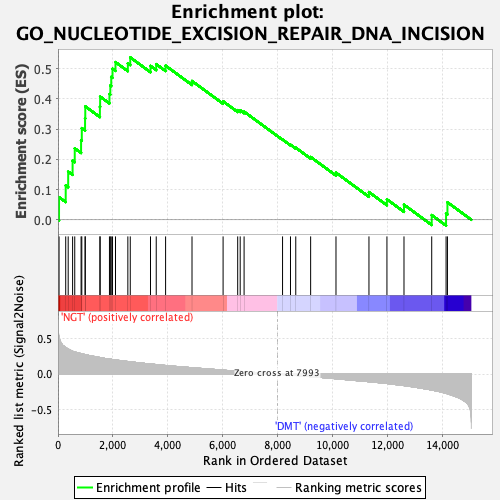
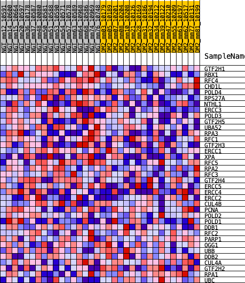
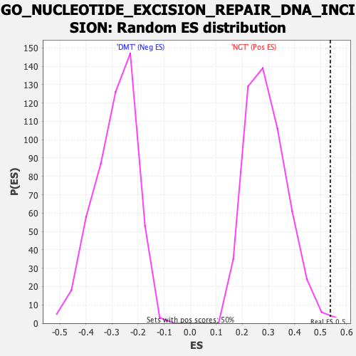

| | | Dataset | Diabetes_collapsed_symbols.Diabetes.cls#NGT_versus_DMT |
| Phenotype | Diabetes.cls#NGT_versus_DMT |
| Upregulated in class | NGT |
| GeneSet | GO_NUCLEOTIDE_EXCISION_REPAIR_DNA_INCISION |
| Enrichment Score (ES) | 0.5373327 |
| Normalized Enrichment Score (NES) | 1.8317852 |
| Nominal p-value | 0.005964215 |
| FDR q-value | 0.14690235 |
| FWER p-Value | 0.769 |
Table: GSEA Results Summary

Fig 1: Enrichment plot: GO_NUCLEOTIDE_EXCISION_REPAIR_DNA_INCISION
Profile of the Running ES Score & Positions of GeneSet Members on the Rank Ordered List
| PROBE | DESCRIPTION
(from dataset) | GENE SYMBOL | GENE_TITLE | RANK IN GENE LIST | RANK METRIC SCORE | RUNNING ES | CORE ENRICHMENT | | 1 | GTF2H1 | na | | | 38 | 0.527 | 0.0748 | Yes |
| 2 | RBX1 | na | | | 281 | 0.374 | 0.1137 | Yes |
| 3 | RFC4 | na | | | 371 | 0.352 | 0.1594 | Yes |
| 4 | CHD1L | na | | | 532 | 0.320 | 0.1957 | Yes |
| 5 | POLD4 | na | | | 610 | 0.311 | 0.2363 | Yes |
| 6 | RPS27A | na | | | 841 | 0.287 | 0.2631 | Yes |
| 7 | NTHL1 | na | | | 867 | 0.284 | 0.3032 | Yes |
| 8 | ERCC3 | na | | | 986 | 0.274 | 0.3356 | Yes |
| 9 | POLD3 | na | | | 994 | 0.273 | 0.3752 | Yes |
| 10 | GTF2H5 | na | | | 1526 | 0.233 | 0.3741 | Yes |
| 11 | UBA52 | na | | | 1535 | 0.232 | 0.4076 | Yes |
| 12 | RPA3 | na | | | 1874 | 0.211 | 0.4160 | Yes |
| 13 | RFC1 | na | | | 1906 | 0.209 | 0.4446 | Yes |
| 14 | GTF2H3 | na | | | 1939 | 0.207 | 0.4729 | Yes |
| 15 | ERCC1 | na | | | 1986 | 0.204 | 0.4998 | Yes |
| 16 | XPA | na | | | 2094 | 0.198 | 0.5217 | Yes |
| 17 | RFC5 | na | | | 2544 | 0.177 | 0.5178 | Yes |
| 18 | RPA2 | na | | | 2632 | 0.173 | 0.5373 | Yes |
| 19 | RFC3 | na | | | 3369 | 0.142 | 0.5092 | No |
| 20 | GTF2H4 | na | | | 3578 | 0.134 | 0.5150 | No |
| 21 | ERCC5 | na | | | 3919 | 0.121 | 0.5101 | No |
| 22 | ERCC4 | na | | | 4881 | 0.090 | 0.4593 | No |
| 23 | ERCC2 | na | | | 6013 | 0.055 | 0.3921 | No |
| 24 | CUL4B | na | | | 6545 | 0.041 | 0.3627 | No |
| 25 | PCNA | na | | | 6636 | 0.038 | 0.3623 | No |
| 26 | POLD2 | na | | | 6778 | 0.034 | 0.3578 | No |
| 27 | POLD1 | na | | | 8179 | -0.006 | 0.2655 | No |
| 28 | DDB1 | na | | | 8468 | -0.014 | 0.2484 | No |
| 29 | RFC2 | na | | | 8660 | -0.019 | 0.2385 | No |
| 30 | PARP1 | na | | | 9202 | -0.036 | 0.2078 | No |
| 31 | OGG1 | na | | | 10125 | -0.065 | 0.1559 | No |
| 32 | UBB | na | | | 11326 | -0.107 | 0.0917 | No |
| 33 | DDB2 | na | | | 11981 | -0.132 | 0.0676 | No |
| 34 | CUL4A | na | | | 12602 | -0.161 | 0.0500 | No |
| 35 | GTF2H2 | na | | | 13612 | -0.223 | 0.0156 | No |
| 36 | RPA1 | na | | | 14135 | -0.271 | 0.0206 | No |
| 37 | UBC | na | | | 14185 | -0.277 | 0.0579 | No |
Table: GSEA details [plain text format]

Fig 2: GO_NUCLEOTIDE_EXCISION_REPAIR_DNA_INCISION
Blue-Pink O' Gram in the Space of the Analyzed GeneSet

Fig 3: GO_NUCLEOTIDE_EXCISION_REPAIR_DNA_INCISION: Random ES distribution
Gene set null distribution of ES for GO_NUCLEOTIDE_EXCISION_REPAIR_DNA_INCISION